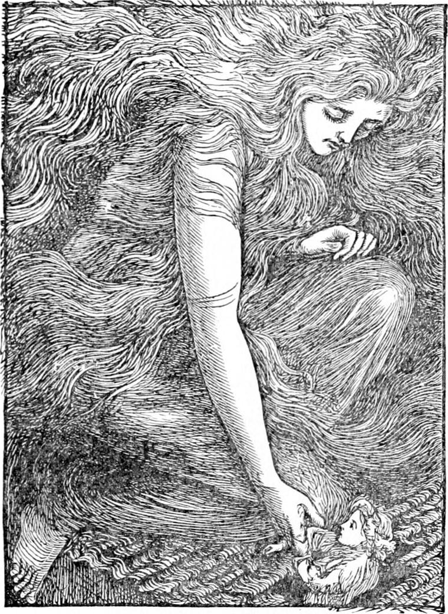
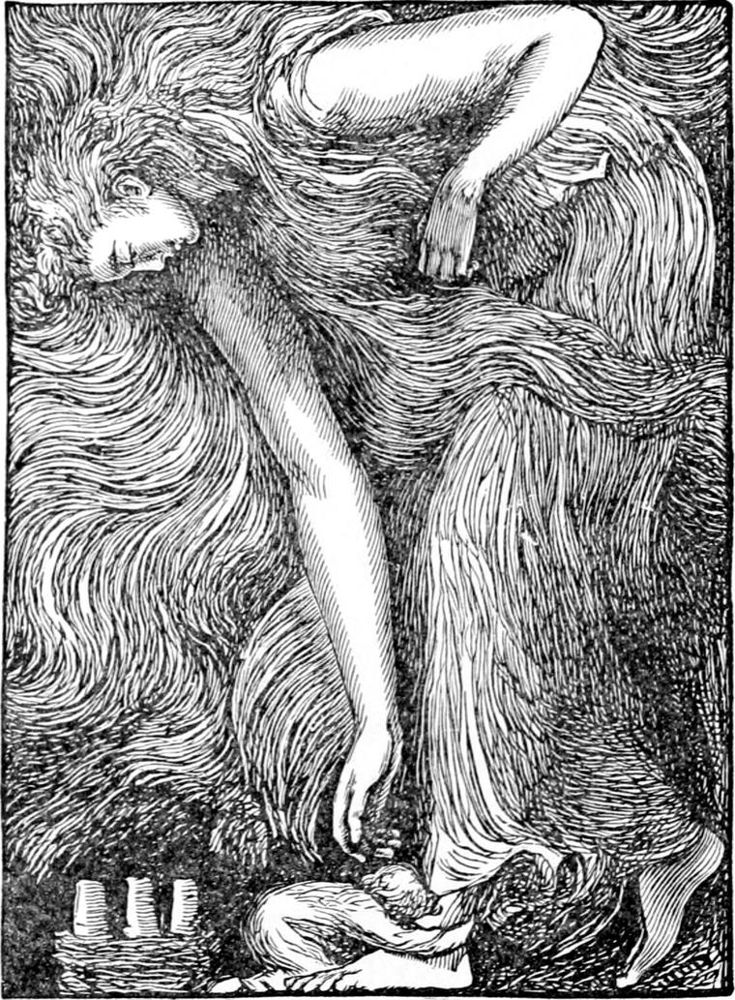
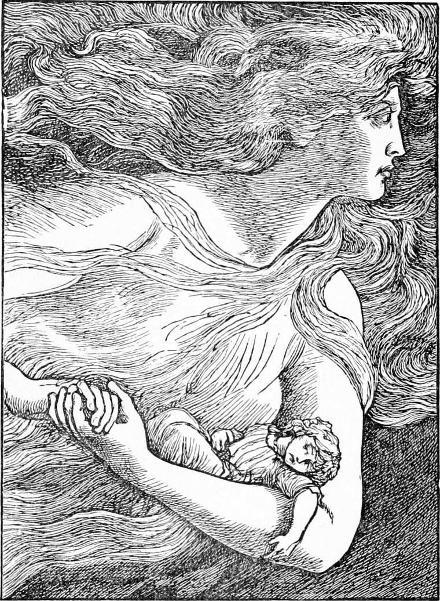
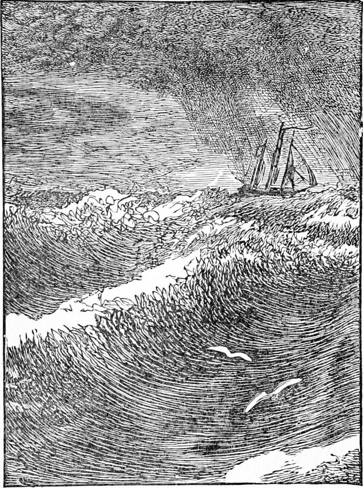

THE hand felt its way up his arm, and, grasping it gently and strongly above the elbow, lifted Diamond from the bed. The moment he was through the hole in the roof, all the winds of heaven seemed to lay hold upon him, and buffet him hither and thither. His hair blew one way, his night-gown another, his legs threatened to float from under him, and his head to grow dizzy with the swiftness of the invisible assailant. Cowering, he clung with the other hand to the huge hand which held his arm, and fear invaded his heart.
“Oh, North Wind!” he murmured, but the words vanished from his lips as he had seen the soap-bubbles that burst too soon vanish from the mouth of his pipe. The wind caught them, and they were nowhere. They couldn't get out at all, but were torn away and strangled. And yet North Wind heard them, and in her answer it seemed to Diamond that just because she was so big and could not help it, and just because her ear and her mouth must seem to him so dreadfully far away, she spoke to him more tenderly and graciously than ever before. Her voice was like the bass of a deep organ, without the groan in it; like the most delicate of violin tones without the wail in it; like the most glorious of trumpet-ejaculations without the defiance in it; like the sound of falling water without the clatter and clash in it: it was like all of them and neither of them—all of them without their faults, each of them without its peculiarity: after all, it was more like his mother's voice than anything else in the world.

“Diamond, dear,” she said, “be a man. What is fearful to you is not the least fearful to me.”
“But it can't hurt you,” murmured Diamond, “for you're it.”
“Then if I'm it, and have you in my arms, how can it hurt you?”
“Oh yes! I see,” whispered Diamond. “But it looks so dreadful, and it pushes me about so.”
“Yes, it does, my dear. That is what it was sent for.”
At the same moment, a peal of thunder which shook Diamond's heart against the sides of his bosom hurtled out of the heavens: I cannot say out of the sky, for there was no sky. Diamond had not seen the lightning, for he had been intent on finding the face of North Wind. Every moment the folds of her garment would sweep across his eyes and blind him, but between, he could just persuade himself that he saw great glories of woman's eyes looking down through rifts in the mountainous clouds over his head.
He trembled so at the thunder, that his knees failed him, and he sunk down at North Wind's feet, and clasped her round the column of her ankle. She instantly stooped, lifted him from the roof—up—up into her bosom, and held him there, saying, as if to an inconsolable child—
“Diamond, dear, this will never do.”
“Oh yes, it will,” answered Diamond. “I am all right now—quite comfortable, I assure you, dear North Wind. If you will only let me stay here, I shall be all right indeed.”
“But you will feel the wind here, Diamond.”
“I don't mind that a bit, so long as I feel your arms through it,” answered Diamond, nestling closer to her grand bosom.
“Brave boy!” returned North Wind, pressing him closer.
“No,” said Diamond, “I don't see that. It's not courage at all, so long as I feel you there.”
“But hadn't you better get into my hair? Then you would not feel the wind; you will here.”
“Ah, but, dear North Wind, you don't know how nice it is to feel your arms about me. It is a thousand times better to have them and the wind together, than to have only your hair and the back of your neck and no wind at all.”
“But it is surely more comfortable there?”
“Well, perhaps; but I begin to think there are better things than being comfortable.”

“Yes, indeed there are. Well, I will keep you in front of me. You will feel the wind, but not too much. I shall only want one arm to take care of you; the other will be quite enough to sink the ship.”
“Oh, dear North Wind! how can you talk so?”
“My dear boy, I never talk; I always mean what I say.”
“Then you do mean to sink the ship with the other hand?”
“Yes.”
“It's not like you.”
“How do you know that?”
“Quite easily. Here you are taking care of a poor little boy with one arm, and there you are sinking a ship with the other. It can't be like you.”
“Ah! but which is me? I can't be two mes, you know.”
“No. Nobody can be two mes.”
“Well, which me is me?”
“Now I must think. There looks to be two.”
“Yes. That's the very point.—You can't be knowing the thing you don't know, can you?”
“No.”
“Which me do you know?”
“The kindest, goodest, best me in the world,” answered Diamond, clinging to North Wind.
“Why am I good to you?”
“I don't know.”
“Have you ever done anything for me?”
“No.”
“Then I must be good to you because I choose to be good to you.”
“Yes.”
“Why should I choose?”
“Because—because—because you like.”
“Why should I like to be good to you?”
“I don't know, except it be because it's good to be good to me.”
“That's just it; I am good to you because I like to be good.”
“Then why shouldn't you be good to other people as well as to me?”
“That's just what I don't know. Why shouldn't I?”
“I don't know either. Then why shouldn't you?”
“Because I am.”
“There it is again,” said Diamond. “I don't see that you are. It looks quite the other thing.”
“Well, but listen to me, Diamond. You know the one me, you say, and that is good.”
“Yes.”
“Do you know the other me as well?”
“No. I can't. I shouldn't like to.”
“There it is. You don't know the other me. You are sure of one of them?”
“Yes.”
“And you are sure there can't be two mes?”
“Yes.”
“Then the me you don't know must be the same as the me you do know,—else there would be two mes?”
“Yes.”
“Then the other me you don't know must be as kind as the me you do know?”
“Yes.”
“Besides, I tell you that it is so, only it doesn't look like it. That I confess freely. Have you anything more to object?”
“No, no, dear North Wind; I am quite satisfied.”
“Then I will tell you something you might object. You might say that the me you know is like the other me, and that I am cruel all through.”
“I know that can't be, because you are so kind.”
“But that kindness might be only a pretence for the sake of being more cruel afterwards.”
Diamond clung to her tighter than ever, crying—
“No, no, dear North Wind; I can't believe that. I don't believe it. I won't believe it. That would kill me. I love you, and you must love me, else how did I come to love you? How could you know how to put on such a beautiful face if you did not love me and the rest? No. You may sink as many ships as you like, and I won't say another word. I can't say I shall like to see it, you know.”

“That's quite another thing,” said North Wind; and as she spoke she gave one spring from the roof of the hay-loft, and rushed up into the clouds, with Diamond on her left arm close to her heart. And as if the clouds knew she had come, they burst into a fresh jubilation of thunderous light. For a few moments, Diamond seemed to be borne up through the depths of an ocean of dazzling flame; the next, the winds were writhing around him like a storm of serpents. For they were in the midst of the clouds and mists, and they of course took the shapes of the wind, eddying and wreathing and whirling and shooting and dashing about like grey and black water, so that it was as if the wind itself had taken shape, and he saw the grey and black wind tossing and raving most madly all about him. Now it blinded him by smiting him upon the eyes; now it deafened him by bellowing in his ears; for even when the thunder came he knew now that it was the billows of the great ocean of the air dashing against each other in their haste to fill the hollow scooped out by the lightning; now it took his breath quite away by sucking it from his body with the speed of its rush. But he did not mind it. He only gasped first and then laughed, for the arm of North Wind was about him, and he was leaning against her bosom. It is quite impossible for me to describe what he saw. Did you ever watch a great wave shoot into a winding passage amongst rocks? If you ever did, you would see that the water rushed every way at once, some of it even turning back and opposing the rest; greater confusion you might see nowhere except in a crowd of frightened people. Well, the wind was like that, except that it went much faster, and therefore was much wilder, and twisted and shot and curled and dodged and clashed and raved ten times more madly than anything else in creation except human passions. Diamond saw the threads of the lady's hair streaking it all. In parts indeed he could not tell which was hair and which was black storm and vapour. It seemed sometimes that all the great billows of mist-muddy wind were woven out of the crossing lines of North Wind's infinite hair, sweeping in endless intertwistings. And Diamond felt as the wind seized on his hair, which his mother kept rather long, as if he too was a part of the storm, and some of its life went out from him. But so sheltered was he by North Wind's arm and bosom that only at times, in the fiercer onslaught of some curl-billowed eddy, did he recognise for a moment how wild was the storm in which he was carried, nestling in its very core and formative centre.

It seemed to Diamond likewise that they were motionless in this centre, and that all the confusion and fighting went on around them. Flash after flash illuminated the fierce chaos, revealing in varied yellow and blue and grey and dusky red the vapourous contention; peal after peal of thunder tore the infinite waste; but it seemed to Diamond that North Wind and he were motionless, all but the hair. It was not so. They were sweeping with the speed of the wind itself towards the sea.